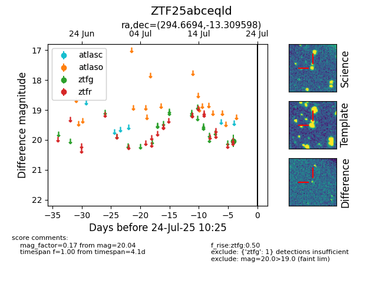

Target ZTF25abceqld at 2025-07-24 10:25, see:
FINK: fink-portal.org/ZTF25abceqld
Lasair: lasair-ztf.lsst.ac.uk/objects/ZTF25abceqld
ALeRCE: alerce.online/object/ZTF25abceqld
alt names
ZTF25abceqld (ztf,fink)
coordinates:
equatorial (ra, dec) = (294.6694,-13.30960)
galactic (l, b) = (26.1031,-16.39340)
photometry
last ztfg=20.04
1 ztfg detections
